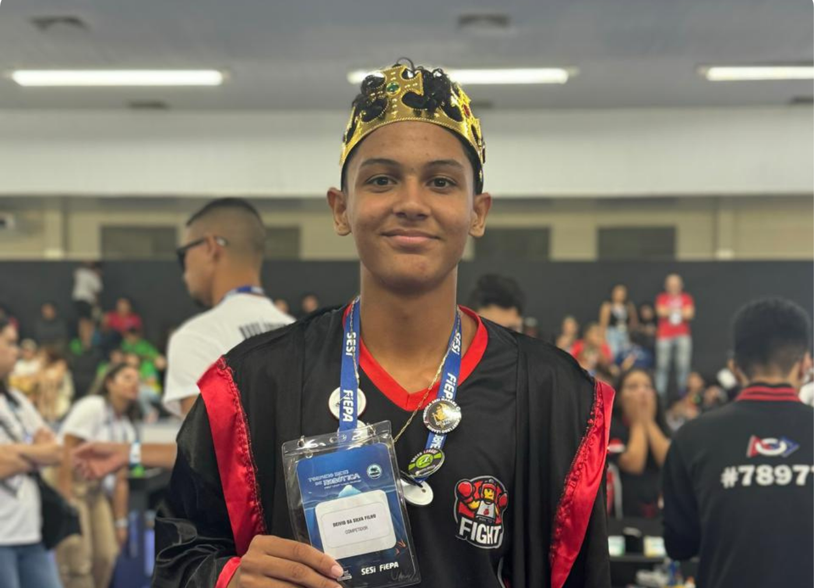

Antes de Kepler: órbitas eram descritas por complicados sistemas de epiciclos. Kepler revelou a geometria simples do Sistema Solar: elipses, áreas proporcionais e a harmonia entre período e distância. Essas leis permitiram que Newton formulasse a lei da gravitação universal — unificando a física celeste e terrestre. Até hoje, são a base para calcular órbitas de satélites, sondas espaciais e exoplanetas. São a ponte entre a observação pura e a matemática que descreve o cosmos.
⚡ “A astronomia deixava de ser apenas descritiva e tornava-se preditiva.”
"Os planetas descrevem órbitas elípticas em torno do Sol, que ocupa um dos focos."
A elipse tem dois focos. Nesta animação, o Sol (amarelo) está no foco esquerdo. O planeta azul percorre a elipse — note que a distância até o Sol varia.
"O vetor que liga o planeta ao Sol varre áreas iguais em intervalos de tempo iguais."
Mostramos dois setores de mesma área. O setor vermelho (periélio) é mais largo; o setor azul (afélio) é mais estreito. As áreas são matematicamente iguais.
"O quadrado do período orbital é proporcional ao cubo do semi-eixo maior da órbita."
Animação com dois planetas: interno (a=80) e externo (a=150). O período do externo é ≈2,57× maior.